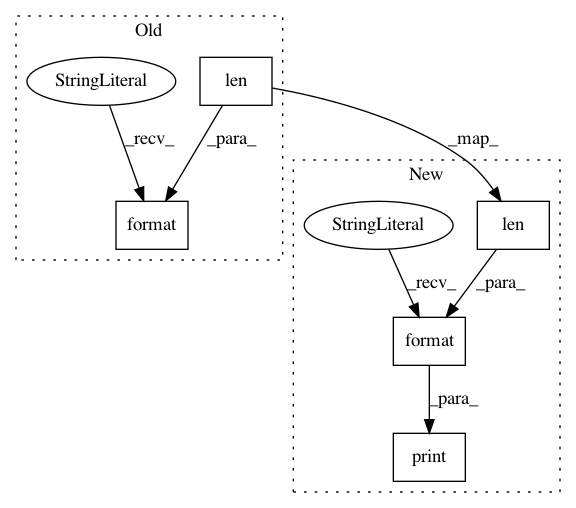

848b5e19d1a893baf8d66e79ec0c3eb90ef3b83d,examples/mujoco_all_sac_real_nvp.py,,launch_experiments,#Any#,198
Before Change
variants = variant_generator.variants()
for i, variant in enumerate(variants):
print("Launching {} experiments.".format(len(variants)))
run_sac_experiment(
run_experiment,
mode=args.mode,
After Change
def launch_experiments(variant_generator):
variants = variant_generator.variants()
num_experiments = len(variants)
print("Launching {} experiments.".format(num_experiments))
for i, variant in enumerate(variants):
print("Experiment: {}/{}".format(i, num_experiments))
experiment_prefix = variant["prefix"] + "/" + args.exp_name
In pattern: SUPERPATTERN
Frequency: 3
Non-data size: 5
Instances
Project Name: rail-berkeley/softlearning
Commit Name: 848b5e19d1a893baf8d66e79ec0c3eb90ef3b83d
Time: 2018-05-22
Author: kristian.hartikainen@gmail.com
File Name: examples/mujoco_all_sac_real_nvp.py
Class Name:
Method Name: launch_experiments
Project Name: rail-berkeley/softlearning
Commit Name: c61f9faac7562834a15bf9d78699f723a947d029
Time: 2018-06-25
Author: kristian.hartikainen@gmail.com
File Name: examples/mujoco_all_sql_remote.py
Class Name:
Method Name: launch_experiments
Project Name: rail-berkeley/softlearning
Commit Name: c61f9faac7562834a15bf9d78699f723a947d029
Time: 2018-06-25
Author: kristian.hartikainen@gmail.com
File Name: examples/mujoco_all_sql.py
Class Name:
Method Name: launch_experiments